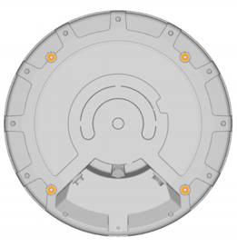
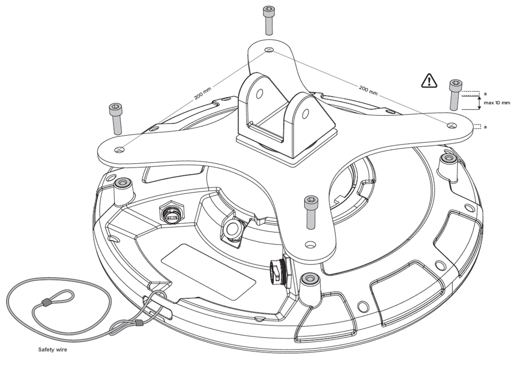
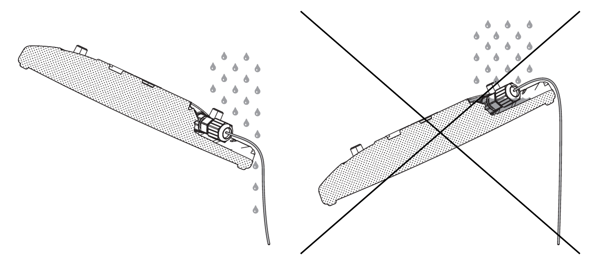

Использование локатора Q35
В этом разделе приведена полезная информация об установке устройства Q35, а также его подключении к источнику питания и сети.
Установка
Вблизи перед установленным локатором Q35 и сбоку от него не должно быть никаких металлических препятствий (например, воздуховодов системы кондиционирования воздуха, больших балок перекрытия, конструкций здания). Если нужно расположить Q35 в таких условиях, установите его на конце жесткого кабель-канала, чтобы устройство оказалось ниже таких препятствий.
Установка с использованием кронштейна VESA
Выбор совместимого монтажного кронштейна
Монтажные отверстия на корпусе Q35 расположены по стандарту VESA MIS-F, 200, Y, 6 (четыре резьбовых отверстия M6 по углам квадрата 200x200 мм). Выбирайте монтажный кронштейн в соответствии с условиями установки. Обратите внимание, что некоторые модели монтажных кронштейнов после их установки могут перекрывать доступ к разъемам для подключения кабелей. Убедитесь, что монтажный кронштейн способен выдержать массу локатора Quuppa Q35 (1,3 кг) и возможные ветровые нагрузки.
Установка устройства

- Подключите к локатору кабель Ethernet (и кабель с разъемом Micro USB, если он используется). У данного устройства функцию разъема Ethernet выполняет USB-разъем Firewire RR-125300-03-х, поэтому перед тем, как продолжить установку, проверьте, совместимы ли с ним ваши кабели. Поскольку к устройству Q35 можно подключать как экранированный, так и неэкранированный кабель Ethernet (например, категории 5e/6), можно выбрать кабель того типа, который лучше всего подходит для конкретного места установки. Например, если устройство будет работать в жестких условиях (например, на промышленном объекте или открытом воздухе), то для лучшей защиты от электромагнитных помех и электростатических разрядов мы рекомендуем выбирать экранированные кабели. Note:При установке устройства на открытом воздухе (или в помещении с высокой влажностью или запыленностью) используйте для его защиты от воды, влаги и пыли те кабели и разъемы, которые предназначены для наружного применения. В таких случаях для обеспечения полной водонепроницаемости мы рекомендуем:
- Использовать готовые кабели с уже установленными на заводе водонепроницаемыми разъемами (например, RR-125320-02-XX). Если невозможно приобрести готовые кабели, то также можно установить поверх разъема RJ45 (например, RR-125360-00 или RR-125330-00) корпус от какого-либо совместимого с ним разъема.
- Проверить, что кабельный разъем правильно и надежно вставлен в соответствии с инструкциями производителя.
- Не снимать защитную заглушку USB-разъема, если он не используется для питания локатора (если он используется, то убедитесь, чтобы на конце кабеля был установлен водонепроницаемый USB-разъем). USB-разъем на Q35 представляет собой разъем USBFirewire RR-11A200-0P-XX, к которому можно подключать USB-кабели с водонепроницаемыми разъемами USBFirewire серии RR-11B220-05-XX.
За дополнительной информацией о совместимых разъемах и кабелях обращайтесь в отдел технической поддержки компании Quuppa по адресу support@quuppa.com.
- Проверьте кабели с помощью тестера кабелей Ethernet и убедитесь, что все разъемы вставлены правильно и надежно. При прокладке кабеля к коммутатору с поддержкой PoE не допускайте его резких изгибов и натяжения. При устранении неполадок с подключением можно также обратить внимание, что показывает светодиодный индикатор устройства. Дополнительную информацию см. ниже в разделе Подключение к сети.
- Прикрепите к устройству Q35 монтажный кронштейн четырьмя болтами (см.
рисунок ниже). Затяните болты M6 с моментом 2 Н·м (максимальный допустимый
момент 2,5 Н·м).
Для крепления кронштейна небольшой толщины можно использовать болты M6 длиной 10 мм. При креплении кронштейнов большей толщины определите подходящую длину болтов (максимальная длина используемых болтов составляет 10 мм + толщина используемого кронштейна VESA). Очень важно использовать болты правильного размера, чтобы не повредить устройство.

- Прикрепите монтажный кронштейн VESA к стене, потолку или мачте.Warning:Перед установкой всегда проверяйте, что монтажная поверхность или мачта рассчитана на массу оборудования и возможные ветровые нагрузки.
- Направьте Q35 в направлении предполагаемой зоны покрытия и затяните весь крепеж.
- Убедитесь, что другой конец кабеля Ethernet вставлен в устройство, подключенное к системе Quuppa.
Советы по установке
-
При установке на открытом воздухе наклоните устройство, чтобы с него стекала дождевая вода.

-
Перед тем как заказать все комплектующие для монтажа в большом проекте, выполните пробную установку.
-
Изучите требования местных органов власти к безопасности и при необходимости используйте при установке гибкую анкерную линию.
-
Если устройство Q35 должно быть наклонено, чтобы обеспечить предполагаемую зону покрытия, то при его установке проследите, чтобы был возможен требуемый угол наклона.
Подключение к источнику питания
Вариант 1: использование Power over Ethernet (PoE)
Устройство Q35 позволяет использовать в качестве источника его питания стандартные компоненты с поддержкой PoE (Power over Ethernet) IEEE 802.3at типа 1, например коммутатор с поддержкой PoE или инжектор питания. Используйте только стандартные сертифицированные устройства PoE. При использовании PoE отдельный источник питания постоянного тока не требуется.
Вариант 2: использование отдельного кабеля питания 5 В пост. тока с разъемом Micro USB
Если компоненты с поддержкой PoE не используются, то подключите Q35 к источнику питания 5 В с помощью кабеля с разъемом Micro USB. Используйте только совместимые источники питания. Если есть сомнения в совместимости источника питания, обратитесь в компанию Quuppa.
При подаче питания Q35 включается автоматически. Красный индикатор несколько раз мигнет и затем станет непрерывно гореть, пока Q35 не подключится к программному обеспечению QPE.
Подключение к сети
Подключите Q35 к сети, вставив кабель Ethernet в Ethernet-разъем RJ-45. С целью обеспечения безопасности и для предотвращения повреждений устройства Q35 подключайте к нему только стандартные сертифицированные сетевые компоненты.
Если устройство Q35 правильно подключено к сети, но не активировано программным обеспечением QPE, то будет медленно мигать красный индикатор. Если устройство Q35 активировано программным обеспечением QPE, то будет мигать или непрерывно гореть синий индикатор. При необходимости, когда локатор находится в режиме отслеживания, его светодиодный индикатор можно отключить. Дополнительную информацию см. в отдельной инструкции.
Таблица состояний светодиодного индикатора
Ниже в таблице приведены состояния светодиодного индикатора в разных режимах работы локатора.
| Цветовая последовательность | Описание последовательности | Режим работы локатора |
|---|---|---|
 |
Один раз последовательно мигает красный — зеленый — синий | Выполняется перезагрузка |
 |
Непрерывно горящий красный | Питание локатора включено, нет IP-адреса |
 |
Мигающий красный | Локатор подключен к сети |
 |
Мигающий синий | Локатор в режиме подготовки к использованию |
| Непрерывно горящий синий | Локатор в режиме отслеживания | |
 |
Мигающий белый | Выполняется обновление прошивки локатора |
 |
По два раза с паузами мигает красный | Подписка на локатор недействительна |
| Не горит | Возможное дополнительное состояние индикатора в режиме отслеживания |